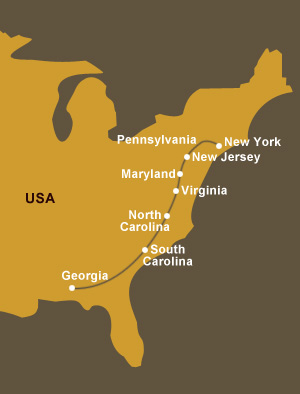

 Pennsylvania, New Jersey and New York : 18.03.04
Pennsylvania, New Jersey and New York : 18.03.04
 Our first stop in Pennsylvania was at the house of Kathleen Crompton. It was a long day travelling to get there but it was certainly all worth it. We stayed at the stables of her local fox-hunting club where we received first rate treatment and Miss M told us the same could be said of her stay at Ms Crompton’s house. Kathleen
Our first stop in Pennsylvania was at the house of Kathleen Crompton. It was a long day travelling to get there but it was certainly all worth it. We stayed at the stables of her local fox-hunting club where we received first rate treatment and Miss M told us the same could be said of her stay at Ms Crompton’s house. Kathleen  also invited a bunch of her riding friends to come over for the evening and everybody enjoyed the lovely snacks and drinks whilst Miss M relayed some of our stories.
also invited a bunch of her riding friends to come over for the evening and everybody enjoyed the lovely snacks and drinks whilst Miss M relayed some of our stories.
 I might not have mentioned this but we got a message on our guestbook from Matthew Gillis from the Farrier Association in the US, offering their services very kindly should the need arise for foot-care, until our arrival in New York. We were also very sorry to hear that the local Fort Wayne Indiana Therapeutic riding center recently had to close down to a
I might not have mentioned this but we got a message on our guestbook from Matthew Gillis from the Farrier Association in the US, offering their services very kindly should the need arise for foot-care, until our arrival in New York. We were also very sorry to hear that the local Fort Wayne Indiana Therapeutic riding center recently had to close down to a  lack of funds. According to Matthew, all who has been involved with the barn, the horses and the people it benefited, were devastated Off course we were so grateful for Elliott Jennings and Stephen Teichman from the Chester Country Farrier Associates who kindly came to do both Toto and my feet. They were very friendly lads and did a marvelous job.
lack of funds. According to Matthew, all who has been involved with the barn, the horses and the people it benefited, were devastated Off course we were so grateful for Elliott Jennings and Stephen Teichman from the Chester Country Farrier Associates who kindly came to do both Toto and my feet. They were very friendly lads and did a marvelous job.
 We were invited by Saunders and Sallie Dixon of Thorncroft Therapeutic riding school to stay over as we pass through their valley and was it not for time constraints, we could have easily stayed there until next X-mas!! Miss M was ever so impressed with
We were invited by Saunders and Sallie Dixon of Thorncroft Therapeutic riding school to stay over as we pass through their valley and was it not for time constraints, we could have easily stayed there until next X-mas!! Miss M was ever so impressed with  how this school is run, the atmosphere and the good vibes and she made more than one mental note to be used at a later stage.
how this school is run, the atmosphere and the good vibes and she made more than one mental note to be used at a later stage.
 The road to New Hope was in parts very quiet and parts hugely hectic when we had to go across a very busy bridge. Fortunately we had some friendly escort and Tiffany who gave a helping hand until we arrived at her and Jim’s picturesque farm complete with stone cottage, spacious fields and cosy barns.
The road to New Hope was in parts very quiet and parts hugely hectic when we had to go across a very busy bridge. Fortunately we had some friendly escort and Tiffany who gave a helping hand until we arrived at her and Jim’s picturesque farm complete with stone cottage, spacious fields and cosy barns.
 Our official final ride was to the house of Mrs Murdock in New Joursey. Here Lisa, the farm manager made sure that Toto and I have a stable each and that we are generally comfortable. Miss M thoroughly enjoyed her stay at Mrs Murdock’s and she told us about this brave, stylish lady who never complains despite health problems and who has a very sharp (and dry!) sense of humour Miss M was so delighted to have had this resting spot for about a week and during this time she streamlined the arrangements for her entry into NY city and more.
Our official final ride was to the house of Mrs Murdock in New Joursey. Here Lisa, the farm manager made sure that Toto and I have a stable each and that we are generally comfortable. Miss M thoroughly enjoyed her stay at Mrs Murdock’s and she told us about this brave, stylish lady who never complains despite health problems and who has a very sharp (and dry!) sense of humour Miss M was so delighted to have had this resting spot for about a week and during this time she streamlined the arrangements for her entry into NY city and more.
 Mise has joined the pack after an absence of three months (she will say a few words after me) and I have to say she is surely a lady with attitude and I can now understand the fuss!! She needed shoes for the tarmac riding into NY city though and again we were so lucky for Bob Pethich who came out to look after her (and to replace my one shoe that came off in the meantime). Bob is a sought after clinician and gives many clinics on hoof preparation and recognizing and treating hoof capsule distortion. He was presented the Jim Linzy Outstanding Clinician Award in 1993. His business, Bedminster Forge, located in NJ has a concentration in Show Hunters, Dressage and Event horses. Thanks Bob for looking after us!!
Mise has joined the pack after an absence of three months (she will say a few words after me) and I have to say she is surely a lady with attitude and I can now understand the fuss!! She needed shoes for the tarmac riding into NY city though and again we were so lucky for Bob Pethich who came out to look after her (and to replace my one shoe that came off in the meantime). Bob is a sought after clinician and gives many clinics on hoof preparation and recognizing and treating hoof capsule distortion. He was presented the Jim Linzy Outstanding Clinician Award in 1993. His business, Bedminster Forge, located in NJ has a concentration in Show Hunters, Dressage and Event horses. Thanks Bob for looking after us!!
Mise’s turn….
Well, hi folks…how privileged and delighted I feel to be part of TATA again. For those of you who don’t know, here follows a short history on my whereabouts the past few months: Unfortunately I wasn’t able to go with Miss M to the US in December due to a lack of space in the quarantine facility in Florida. So I was kept at the house of the wonderful Sarka, Owaldo and their sweet son, Owalito in Guatemala city. I really miss these friends and they were so good to me. I was kept in a warm, comfortable stall and everyday Sarka made sure that I got a little bit of exercise to keep the muscle supple. Then in February, 2004, I was flown over by DHL (they were the most wonderful sponsors during the trip, in particular DHL Ireland) to Miami in Florida. Dr. Ates Arevaro kindly accompanied me and he did all he could to make sure all went smoothly. In Miami, I was met by the son of Celia Alessandrini, the President of Lazcar International (www.lazcar.com). Miss M and all of us still can not get over the generosity of this fantastic Argentine lady who not only sponsored ALL her fees for importing me into the US but also paid for my quarantine. How amazing is that!! Thank you from the bottom of our hearts Ms Celia…you will never know how much this meant to us.
Unfortunately I wasn’t able to go with Miss M to the US in December due to a lack of space in the quarantine facility in Florida. So I was kept at the house of the wonderful Sarka, Owaldo and their sweet son, Owalito in Guatemala city. I really miss these friends and they were so good to me. I was kept in a warm, comfortable stall and everyday Sarka made sure that I got a little bit of exercise to keep the muscle supple. Then in February, 2004, I was flown over by DHL (they were the most wonderful sponsors during the trip, in particular DHL Ireland) to Miami in Florida. Dr. Ates Arevaro kindly accompanied me and he did all he could to make sure all went smoothly. In Miami, I was met by the son of Celia Alessandrini, the President of Lazcar International (www.lazcar.com). Miss M and all of us still can not get over the generosity of this fantastic Argentine lady who not only sponsored ALL her fees for importing me into the US but also paid for my quarantine. How amazing is that!! Thank you from the bottom of our hearts Ms Celia…you will never know how much this meant to us.
 The generosity of wonderful people, didn’t finish here though because after my 7 day quarantine period, I had to be transported northwards. Without fuss and one-two-three, Miss M’s newly found friends in Georgia, Diane and Joel Johnson, offered to come and get me in Miami. They surely travelled a long way and was so careful that I am okay and content for the duration of the trip. I got VIP treatment for the two weeks I stayed with them and it was with a big lump in my throat that I had to say goodbye to them. You will probably now think that the kindness had to stop here but oh no! Next it was
The generosity of wonderful people, didn’t finish here though because after my 7 day quarantine period, I had to be transported northwards. Without fuss and one-two-three, Miss M’s newly found friends in Georgia, Diane and Joel Johnson, offered to come and get me in Miami. They surely travelled a long way and was so careful that I am okay and content for the duration of the trip. I got VIP treatment for the two weeks I stayed with them and it was with a big lump in my throat that I had to say goodbye to them. You will probably now think that the kindness had to stop here but oh no! Next it was  Todd and Maria from Albany in Georgia who offered their time, money and energy to bring me up to where Miss M was at this stage in New Jersey. They travelled for more than 18 hours to get there late in the night and Mrs Murdock was so kind to put them up for the night. I was very happy to see Miss M and she was delighted for my little neigh when we set eyes on each other! Todd and Maria’s presence also brought a bit of sadness as it meant Miss M had to say goodbye to Camanchi who was going to go back with them. Miss M got very attached to this magnificent Appalloosa and we all felt sorry for her when the time came to say farewell. Camanchi was worth his salt over and over again and Miss M want to say a big big thank you again to Todd and Maria for their selfless help and generosity. Also to Diane and Joel who were amazing! They are all true friends.
Todd and Maria from Albany in Georgia who offered their time, money and energy to bring me up to where Miss M was at this stage in New Jersey. They travelled for more than 18 hours to get there late in the night and Mrs Murdock was so kind to put them up for the night. I was very happy to see Miss M and she was delighted for my little neigh when we set eyes on each other! Todd and Maria’s presence also brought a bit of sadness as it meant Miss M had to say goodbye to Camanchi who was going to go back with them. Miss M got very attached to this magnificent Appalloosa and we all felt sorry for her when the time came to say farewell. Camanchi was worth his salt over and over again and Miss M want to say a big big thank you again to Todd and Maria for their selfless help and generosity. Also to Diane and Joel who were amazing! They are all true friends.
 Well, it took me a few days to get used to Toto and he surely acted a bit strange in the beginning. I even got an introductory kick from him but I won’t hold it against him as I am sure he was not too delighted about my presence either. NY city was calling and paramount in the organisations for our arrival
Well, it took me a few days to get used to Toto and he surely acted a bit strange in the beginning. I even got an introductory kick from him but I won’t hold it against him as I am sure he was not too delighted about my presence either. NY city was calling and paramount in the organisations for our arrival  was a girl called Madilyn Du Toit, a South African who lives and works in NY city and who played an intrinsic part in our arrival in the city. Not only did she organise the stabling (thank you very much to Conor McHugh at Clinton Stables for putting up Toto and I) but also arranged so that Miss M can participate in the
was a girl called Madilyn Du Toit, a South African who lives and works in NY city and who played an intrinsic part in our arrival in the city. Not only did she organise the stabling (thank you very much to Conor McHugh at Clinton Stables for putting up Toto and I) but also arranged so that Miss M can participate in the St. Patricks parade as well as speaking to the officers at the NYPD mounting unit who agreed to escort Miss M into the city. Captain Chris Acerbo was the man who made sure that Miss M and us arrived safe and sound in the city and with him and his colleague, John O’Reilly, we had an enormous fun and entertaining time, riding into the city on a beautiful sunny day the 15th of March.
St. Patricks parade as well as speaking to the officers at the NYPD mounting unit who agreed to escort Miss M into the city. Captain Chris Acerbo was the man who made sure that Miss M and us arrived safe and sound in the city and with him and his colleague, John O’Reilly, we had an enormous fun and entertaining time, riding into the city on a beautiful sunny day the 15th of March. We don’t want to speak for Miss M and tell how she felt on this important day but it was indeed full of excitement and roller-coaster emotions. Keep an eye out for Miss M’s book sometime where she will reveal all and more!
We don’t want to speak for Miss M and tell how she felt on this important day but it was indeed full of excitement and roller-coaster emotions. Keep an eye out for Miss M’s book sometime where she will reveal all and more!
Oh yes, we also got to meet a fine fella called Andy from the History Channel. He is doing a documentary on the Criollo horse and was interested to get some shots of me with Miss M. He came out to New Jersey for one day and we were very lucky that the weather played along that day, providing good footage. Andy was also there the day of our arrival to capture the end of a long long journey.
Well, it took me a few days to get used to Toto and he surely acted a bit strange in the beginning. I even got an introductory kick from him but I won’t hold it against him as I am sure he was not too delighted about my presence either. NY city was calling and paramount in the organisations for our arrival was a girl called Madilyn Du Toit, a South African who lives and works in NY city and who played an intrinsic part in our arrival in the city. Not only did she organise the stabling (thank you very much to Conor McHugh at Clinton Stables for putting up Toto and I) but also arranged so that Miss M can participate in the St. Patricks parade as well as speaking to the officers at the NYPD mounting unit who agreed to escort Miss M into the city. Captain Chris Acerbo was the man who made sure that Miss M and us arrived safe and sound in the city and with him and his colleague, John O’Reilly, we had an enormous fun and entertaining time, riding into the city on a beautiful sunny day the 15th of March.Oh yes, we also got to meet a fine fella called Andy from the History Channel. He is doing a documentary on the Criollo horse and was interested to get some shots of me with Miss M. He came out to New Jersey for one day and we were very lucky that the weather played along that day, providing good footage. Andy was also there the day of our arrival to capture the end of a long long journey.
 Once TATA was finally over and friends from Ireland and Miss M’s mom (we will let her tell you later about this surprise visit) went back home, Miss M had to make decisions about Toto and I. Alyse (who lives with her husband Joe in Maryland) fell in love with Toto from the first time she saw him and asked Miss M if he was available to buy. Miss M just knew that he will be in excellent hands and a few days after the St. Patricks parade in which she and I participated, Toto was
Once TATA was finally over and friends from Ireland and Miss M’s mom (we will let her tell you later about this surprise visit) went back home, Miss M had to make decisions about Toto and I. Alyse (who lives with her husband Joe in Maryland) fell in love with Toto from the first time she saw him and asked Miss M if he was available to buy. Miss M just knew that he will be in excellent hands and a few days after the St. Patricks parade in which she and I participated, Toto was  collected by his new owners at the mounting unit in NY city. Everything worked out brilliantly because I needed a safe haven for a while too and we were so lucky for Tiffany and Jim from New Hope who came to our rescue. They offered that I can stay with them until my return to Ireland so very conveniently the kind Joe and Alyse just dropped me off in New Hope on their way back to Maryland. Although my last month needed to be in isolation on this farm, I was treated very well and never felt too lonely as Tiffany made sure that I could see the other horses all the time from my field.
collected by his new owners at the mounting unit in NY city. Everything worked out brilliantly because I needed a safe haven for a while too and we were so lucky for Tiffany and Jim from New Hope who came to our rescue. They offered that I can stay with them until my return to Ireland so very conveniently the kind Joe and Alyse just dropped me off in New Hope on their way back to Maryland. Although my last month needed to be in isolation on this farm, I was treated very well and never felt too lonely as Tiffany made sure that I could see the other horses all the time from my field.
 Miss M’s friend called Joy was mentioned earlier….well this is just another very generous lady because when the time came for me to go to Chicago from Pensyllvania, she and her husband Don suggested that they will come and collect me and take me to where I will fly from to Ireland. It was a long old haul but they just took it in their stride, ensuring that I have a
Miss M’s friend called Joy was mentioned earlier….well this is just another very generous lady because when the time came for me to go to Chicago from Pensyllvania, she and her husband Don suggested that they will come and collect me and take me to where I will fly from to Ireland. It was a long old haul but they just took it in their stride, ensuring that I have a  very comfortable ride in the back. Our thoughts also go to Don who is currently fighting cancer that was diagnosed shortly before my transporting and we just want to say thank you so much to him and Joy for having taken on this task.
very comfortable ride in the back. Our thoughts also go to Don who is currently fighting cancer that was diagnosed shortly before my transporting and we just want to say thank you so much to him and Joy for having taken on this task.
I am currently back in Ireland and having a peaceful time where I am roaming the fields at Rathsalagh House outside Dublin. It’s a lovely golf estate with luxurious rooms for little weekend stay-overs and spectacular food. Check it out!
And finally on behalf of Miss M, myself (Mise), Tusa, Tu Fein, Camanchi and Toto I just want to express our gratitude and sincere thanks to each and everyone who was part of TATA. for all your wonderful help, your generosity, your belief in us, the ever present encouragement and for sticking with us. Without you, our journey would have been impossible.
CARPE DIEM.